Manual de uso · Noviembre 2026
ALCONBAR
Gestión
Todo el Grupo en un solo lugar.
Grupo Scout 155 Divina Providencia

Este manual explica cómo funciona ALCONBAR Gestión, la app del Grupo. Sirve para ubicarse: qué hay en cada sección, quién puede hacer cada cosa y por dónde se empieza. El paso a paso de cada pantalla lo da Luisito dentro de la app, con sus tutoriales.
Es la aplicación web propia del Grupo Scout 155 Divina Providencia. Junta en un solo lugar la información que estaba repartida en planillas, Drives, chats y papeles, y define quién puede ver y cargar cada cosa.
Se usa desde el navegador de la compu o del celular, sin instalar nada, y se puede agregar a la pantalla de inicio del celular como una app más, con el ícono de Luisito. El nombre viene de la Tribu: AL por Alceste Mión, CON por Luis Conde y BAR por Pedro Bártolo.
Padrón, ficha de cada chico, responsables, documentación, autorizaciones firmadas, asistencia y pases.
Fichas de actividad con su circuito de aprobación, banco de fichas, ciclos, programa del sábado y progresión.
Contabilidad del Grupo y de las unidades, cuotas, pagos con recibo, eventos y campamentos.
Sobre el Grupo, unidades, adultos, organigrama, calendario, actas del Consejo e inventario.
Los rovers entran con su cuenta: Plan Personal, proyectos y mingas, y la Asamblea con votación.
Tutoriales con Luisito, buscador, avisos y un botón para reportar problemas.
| Dato | Detalle |
|---|---|
| 188 protagonistas activos | El padrón de Cruz del Sur, con su rama y su unidad. |
| 65 adultos | Con cargo, unidad, tótem, formación y Asesor Personal de Formación. |
| 8 unidades | De la Colonia de Castores a la Comunidad Rover, con su organigrama. |
| Catálogos de progresión | 186 competencias y 130 especialidades de las guías de rama, y las acciones de Caminantes. |
| 39 fichas de actividad | Las fichas 2026 de la Unidad Scout Luis Conde, con su contenido completo. |
| 7 campamentos y salidas | Con sus datos, inscriptos y cronograma. |
| Calendario y Sobre el Grupo | Los sábados de 2026 con su rama de servicio, y la historia del Grupo y de la Tribu. |
No hay registro abierto: el acceso lo da el Grupo. Quien administra los accesos te manda por WhatsApp un enlace personal para elegir tu contraseña. El enlace sirve durante 7 días; si se venció, pedí otro.
Entrá a alcombar.wearesrv.com con tu mail y tu contraseña. Si te olvidaste la contraseña, tocá «¿Primera vez, o te olvidaste la contraseña?» en la pantalla de ingreso: te llega un enlace por mail para elegir otra, válido por una hora. Después de 5 intentos fallidos la cuenta se bloquea 15 minutos.
Los rovers entran con su DNI. Su educador les genera el acceso desde la ficha y les dicta una contraseña provisoria; en la primera entrada la app les pide elegir la propia. Después cargan su mail y lo confirman con un código de 6 números.
Cada persona ve y hace lo que su rol le permite. Hay roles de todo el Grupo y roles que valen solo en una unidad.
| Rol | Alcance | Qué hace |
|---|---|---|
| Jefatura de Grupo | Grupo | Ve todos los módulos. Edita adultos, unidades, equipos y calendario del Grupo. |
| Jefe/a de Unidad | Su unidad | Gestiona protagonistas, pequeños grupos, documentación y asistencia de su unidad. |
| Educador/a | Su unidad | Registra asistencia y documentación en su unidad, arma fichas y sigue la progresión. |
| Secretaría | Grupo | Cobra cuotas, afiliaciones y campamentos, registra los pagos y emite recibos. También altas y bajas, documentación y legajos. |
| Tesorería | Grupo | Define los montos y lleva la caja, el presupuesto y las rendiciones de eventos y campamentos. |
| Finanzas de la unidad | Su unidad | Lleva la plata de su unidad: sus cuentas, lo que le pasa el Grupo y sus gastos. |
| Programa / APF | Grupo | Gestiona la formación de adultos y los asesores personales. |
| Intendencia | Grupo | Gestiona el inventario y los préstamos. |
| Consulta | Grupo | Solo lectura de lo no sensible: organigrama, calendario y documentos. |
| Rover | Su Comunidad | Su Plan Personal, sus proyectos y mingas, la Asamblea, el organigrama y el calendario. |
| Superadmin | Grupo | Todo: accesos, roles, permisos, catálogos y auditoría. |
Una persona puede tener más de un rol. El detalle de cada permiso, módulo por módulo, está en Administración → Roles y permisos.
Si sos educador, lo primero que ves es «Tu unidad»: el botón para pasar lista, el programa del próximo encuentro (o el aviso de que falta armarlo), cuántos chicos tienen documentación pendiente y los cumpleaños que se vienen. Debajo está el resumen del Grupo: protagonistas y adultos por unidad, y los cumpleaños del mes.
El menú está ordenado en secciones que se despliegan: Protagonistas, Programa, Tesorería, Grupo, Comunidad Rover y Administración. Cada uno ve solo las que le corresponden. En el celular se abre con el botón de las tres rayitas.
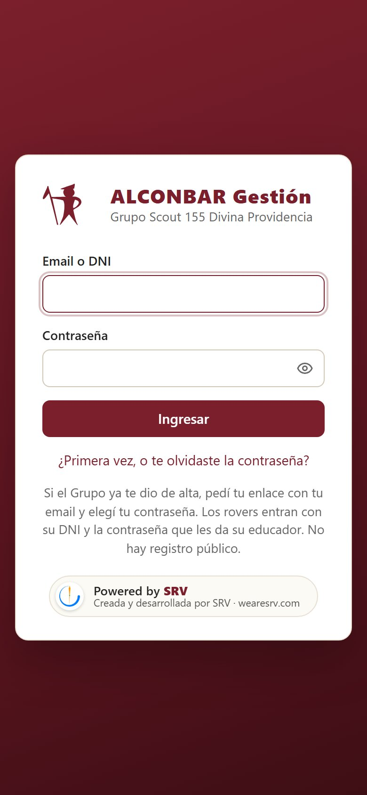
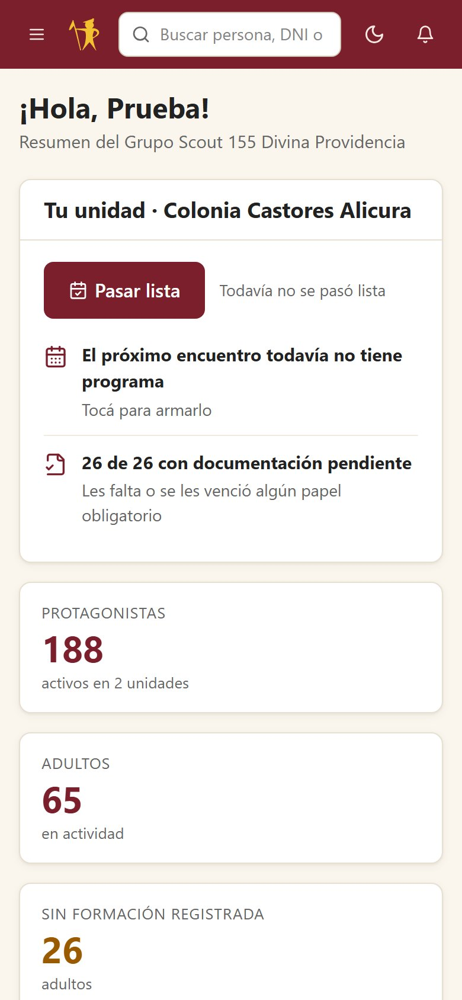
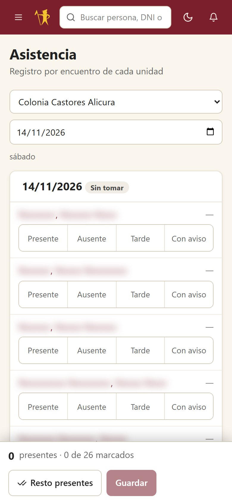
Tocando tu foto y tu nombre, abajo en el menú, vas a Mi perfil: tus datos, tus roles, el tema de la app, tus tutoriales, el cambio de contraseña y el código para abrir la app en el celular.
Quien tiene tótem puede elegir ahí el dibujo de su animal como foto de perfil. Hay 65 animales, y tocando la foto se ve el animal completo.
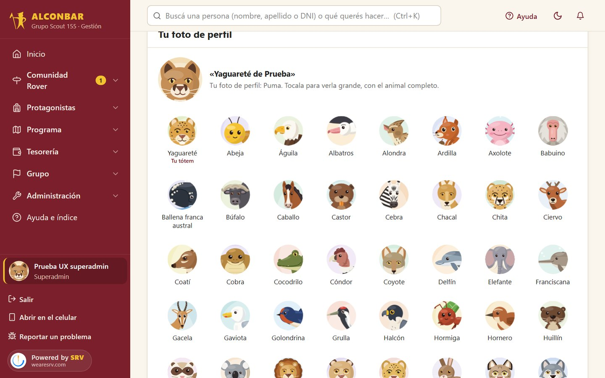
En Grupo → Unidades está cada unidad con sus protagonistas, sus adultos y sus pequeños grupos: patrullas, seisenas o equipos, según la rama.
Lo hacen los adultos de esa unidad, solo en su unidad. Los pequeños grupos se crean, se renombran o se desactivan desde la misma pantalla.
La lista de chicos y chicas del Grupo. Se busca por nombre o DNI y se filtra por unidad, pequeño grupo o estado. Los que se cargaron con su rama pero sin unidad figuran «por asignar»: se tildan varios y con «Asignar unidad» se los ubica. Con «Importar planilla» se cargan muchos juntos desde Excel o Google Sheets, y con «Exportar» se baja el padrón.
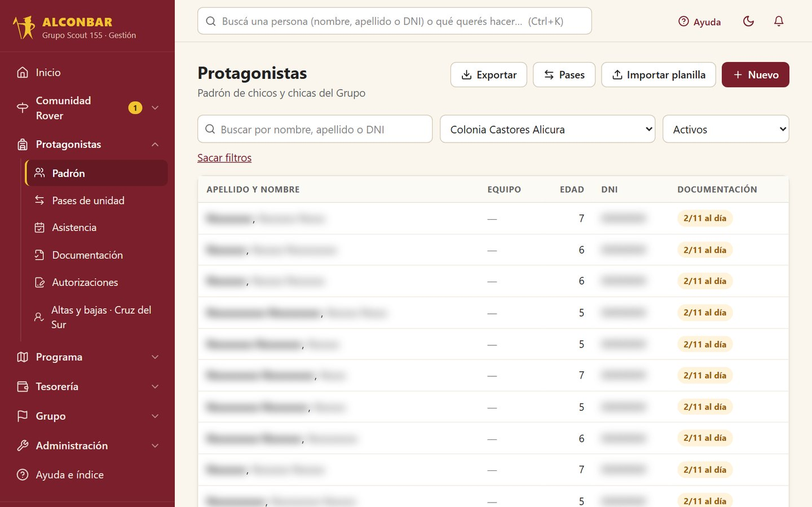
El legajo de cada protagonista según Scouts de Argentina: autorización de ingreso, declaración jurada de salud, autorizaciones anuales, vacunas, obra social, DNI y partida de nacimiento. Por unidad se ve con un semáforo: al día, vence pronto, vencido. Se anota si el papel está y cuándo vence; no se guarda el contenido.
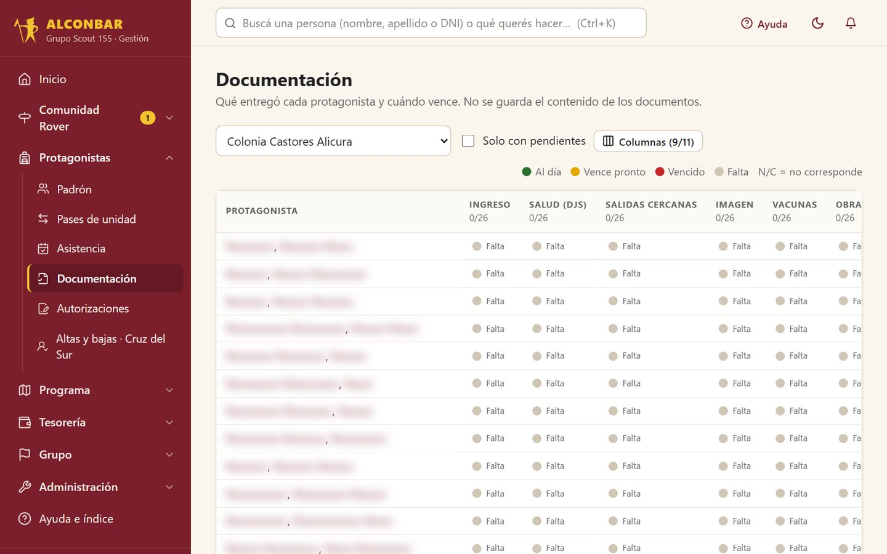
La madre, el padre o el tutor firma en persona, con el dedo, en el celular o la tablet del educador, sobre la planilla oficial de Scouts de Argentina (ingreso, uso de imagen, salidas cercanas, salidas y campamentos) y dos planillas del Grupo (retirarse solo y retiro por otros adultos). El aval lo da el Jefe de Unidad o de Grupo. Cada autorización se baja en PDF con el mismo formato de la planilla.
Se elige la unidad y la fecha, se marca a cada chico como Presente, Ausente, Tarde o Con aviso, y se guarda. «Resto presentes» marca de una vez a los que faltan. Muestra el porcentaje del año de cada uno.
Los pases se hacen una vez al año, en abril. Pasan los que cumplen la edad de pase hasta el 30 de junio de ese año (Castores 7, Lobatos 11, Scouts 14); los que la cumplen después pasan al año siguiente. Los Caminantes pasan a Rovers con 18 cumplidos el día de los pases; si los cumplen después, pasan cuando quieran. Pases de unidad muestra a quiénes les toca y permite pasar a varios juntos. Cada alta o baja queda en «Altas y bajas · Cruz del Sur» para cargarla en la plataforma de Scouts de Argentina; cuando está cargada, se marca como hecha.
Dos por Comunidad Rover y uno por Comunidad Caminante, elegidos por sus pares. Los marca el equipo de educadores desde la ficha del protagonista y aparecen con una etiqueta. A los rovers con cuenta les llega el temario del Consejo; a los caminantes no se les manda nada.
En Grupo → Adultos está cada educador y colaborador con:
El acceso se maneja desde la misma lista de Adultos: ahí se ve quién tiene cuenta y con qué roles, y con el botón de acceso se le da entrada a una persona, se le asignan roles, se genera el enlace para que elija su contraseña o se la desactiva. Lo hace quien administra los accesos del Grupo.
El organigrama se arma solo con los cargos del año: Jefatura, Comité Ejecutivo con sus equipos, y cada unidad con su jefe, subjefe y ayudantes. Para cambiarlo se edita el cargo de la persona. Los equipos de apoyo (Secretaría, Tesorería, Intendencia y los demás) tienen su encargado e integrantes.
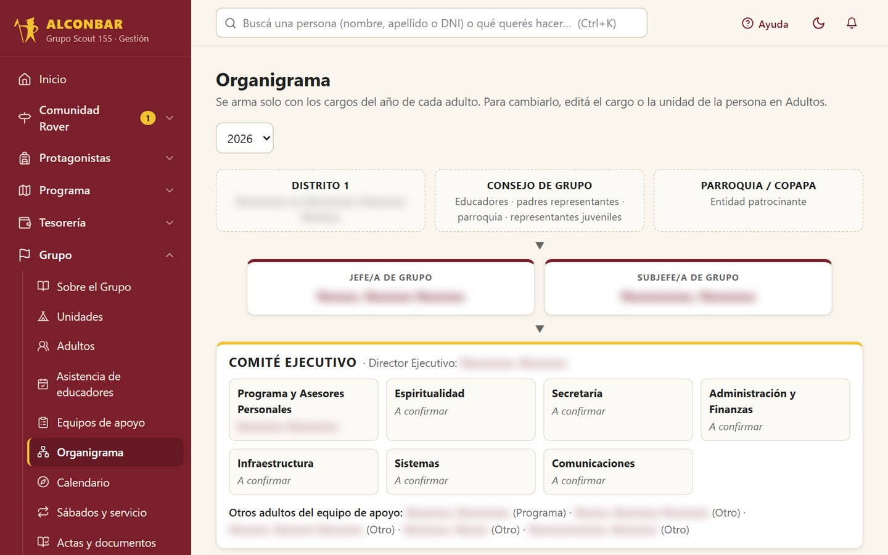
Cada actividad se planifica en una ficha: objetivos, área y competencias, marco de exploración, desarrollo, cierre, materiales y seguridad. La ficha sigue un circuito:
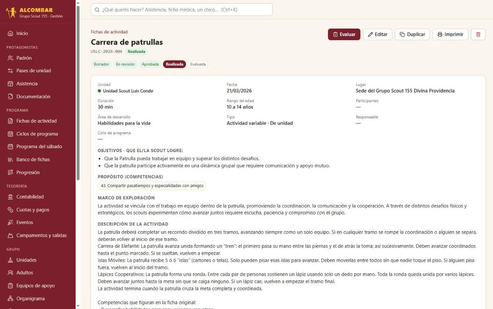
Las fichas aprobadas y realizadas de todas las unidades. Se filtra por rama, área, competencia, tipo y lugar, y con «Usar en mi unidad» se copia.
La grilla de la reunión, momento a momento: hora, actividad o ficha, responsable y duración. Se guarda por fecha y se imprime.
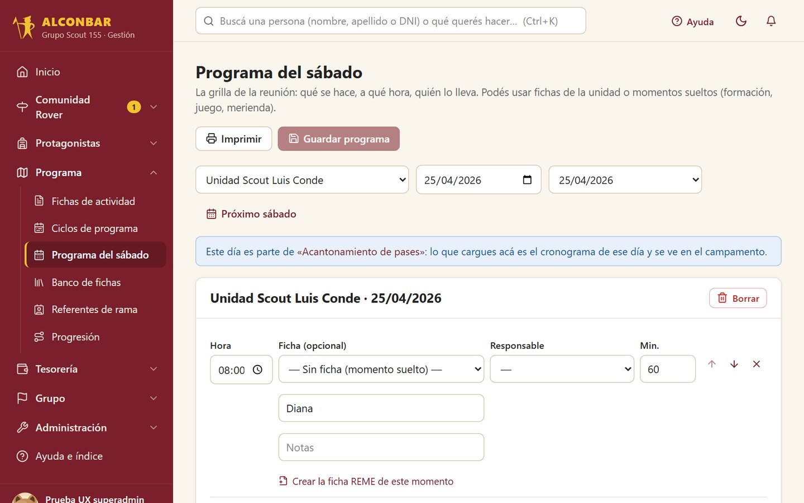
Cada ciclo tiene su diagnóstico, sus propósitos, las actividades del ciclo y la evaluación. Los referentes de rama reciben un aviso cuando una unidad de su rama carga una ficha o un campamento, y pueden verlos sin editarlos.
La progresión de cada protagonista, con los catálogos de su rama ya cargados.
En Programa → Progresión se ve a cada protagonista con su etapa, su insignia, las competencias por área y la última revisión. También muestra los estándares anuales de la unidad.
Tocando un nombre se abre su progresión: etapas, competencias, roles por ciclo, revisiones de fin de ciclo y especialidades. La tarjeta «Seguimiento» guarda las notas de cómo viene y el historial de todo lo que se hizo, con el adulto que lo hizo.
Las competencias, áreas, etapas y especialidades de cada rama están en Esquemas y catálogos. Desde una competencia se puede crear una ficha que ya la trae elegida.
Los rovers son los únicos protagonistas con cuenta. Entran con su DNI y ven solo lo suyo y lo de su Comunidad.
La visión a futuro del rover, sus metas con acciones y plazos, y sus «altos en el camino» para revisar cómo viene. Lo ven solo el rover y sus educadores.
La ficha del Proyecto Rover y la plantilla de organización de la Minga. Se arman en borrador, se postulan en la Asamblea y, una vez aprobados, se ponen en marcha y se cierran con sus aprendizajes.
El educador activa el modo Asamblea. Cada rover da el presente, postula y vota desde su celular. Se aprueba con más de la mitad de los presentes a favor.
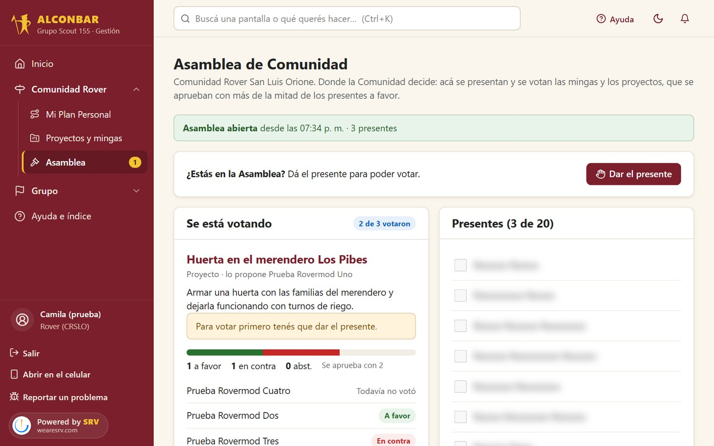
En Comunidad Rover ven a cada rover, si ya entra a la app y cómo viene su Plan Personal. Desde la ficha del rover le generan el acceso.
| Quién | Qué hace |
|---|---|
| Secretaría | Genera las cuotas, cobra, registra los pagos y da los recibos. |
| Tesorería | Define los montos del plan de cuotas, lleva la contabilidad, el presupuesto y los cierres. Es quien puede anular un pago. |
| Finanzas de la unidad | Lleva la caja de su unidad: lo que entra y lo que se gasta. |
Cada campamento, acantonamiento o salida tiene su ficha con cinco pestañas:
El campamento pasa por Borrador → Aprobado → Realizado → Rendido. En «Lugares de acampe» quedan los datos de cada lugar y cómo fue cada vez que se usó.
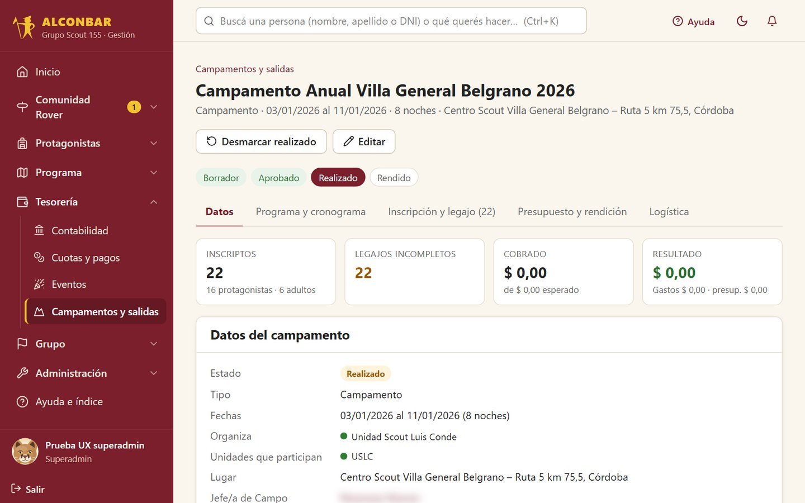
Fogones, aniversario, rifas y otros eventos del Grupo: tareas y compras, presupuesto, ingresos y gastos, y la rendición final.
La historia del Grupo, sus jefes y jefas, y la Tribu. Lo lee cualquiera que entra a la app, y en cada sección todos pueden sumar un aporte: un dato, una anécdota, una corrección.
Reuniones, Consejos de Grupo, eventos, campamentos, formación y feriados, por mes o como agenda. «Sábados y servicio» muestra qué rama está de servicio cada sábado. Si tu unidad no puede, con «Cambiar día» se reacomoda y les llega un aviso a las unidades que se mueven.
Los bienes del Grupo y de cada unidad, con cantidad, estado y ubicación. Los materiales se piden para una actividad o un campamento, se autorizan, se entregan y se registra la devolución con el estado en que volvieron.
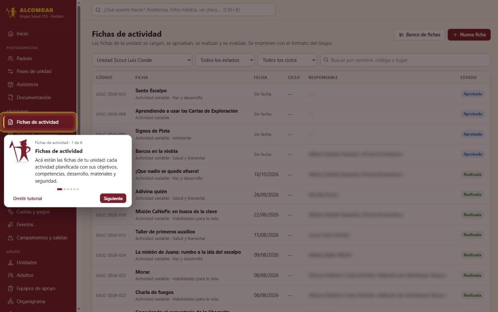
La app guarda datos de menores. Por eso: